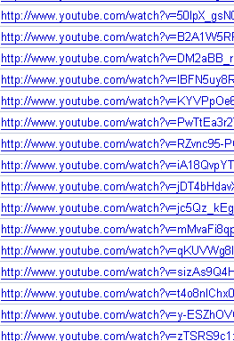

ユーチューブ動画でアクセスアップＳＥＯ
無料ブログのＳＥＯ対策でも、rel="nofollow"をつけてっていうのが多いと思うんですけど、rel="nofollow"をつけてたらページランクが流れないという噂のようです。
けれども、ページの上の方にリンクを貼っている場合とか、ほかに適当なリンクがない場合なんかはrel="nofollow"がついてても流れているような印象もあって、おちおち安心してＳＥＯ対策するわけにもいかないよなって思います。
やっぱ、ページランクが３とか４とかって場所にはなるべくほかのサイトへのリンクは貼りたくないという気持ちがブログ運営者にはあると思うんです。
そんな時に、このrel="nofollow"をエータグにこっそりとしこんでおいて、自分のブログ内に流していくことになるかと思うんですけど、そんなせこいマネをしてもグーグルは全部お見通しって感じで結局はもっとも適切なページへ流れちゃうって印象が強いです。
そんなわけで、最近はユーチューブ動画を利用したＳＥＯ的なことをはじめようって思って、このブログにも動画ビデオバーを設置しているんです。
このブログでは自分の動画しか流していないんですが、ほかのブログでは訪問者さまがたくさん動画をみてくれるので、結構リンクが集まってきたりして、若干検索順位でも上昇してきた感があります。
ユーチューブ動画の被リンクはnofollowつき
ウェブマスターツールの外部リンクタブをみてみると、最近はほとんどがユーチューブ動画の被リンクを占めるようになってきました。
こんな感じでずらっとユーチューブだらけなんですけど、nofollowつきでもマスターツールでは外部リンクとして認識しているようです。

ニュースバーの時も検索順位が上昇したような気もするんですが、やっぱユーチューブ動画なら被リンクもえることができちゃうんで、こっちの方が強力かなって思います。
ビデオバーもニュースバーも質のいいものから表示されていくので、いいサイトにリンクしているサイトは、やっぱいいサイトみたいな法則が適用されるのではないかなと思います。
となると、検索上位を占めているサイトが発リンクしているサイトを調べて、そのサイトにリンクをはっておけばいいみたいなＳＥＯ対策もあるかと思いますが、これだとなんだか骨がないというか、長いものにはまかれろ的発想になってしまうのでやめようって思います。
実際、ユーチューブからのアクセスは、私の場合、ほとんど微妙な感じになってまして、アクセスや被リンクを期待するという意味ではなく、多様性のある関連性を求める感じでユーチューブ動画を利用した方がいいのかなって思います。
そう考えると、このブログでは動画にはとりあえずリンクをはってますが、最新の「ブログの作り方」に関する情報が欠落しているので、ニュースサイトなどを調べながらちょくちょく発リンクしていく予定です。
- 動画を利用した無料ブログの作り方
最近はグーグルアドセンスの方で動画ユニットが出てきましたが、これからは動画に詳しくなると何かと好都合なことも多くなってくるかと思います。 無料ブログを作成する際もユーチューブ動画を取り入れながら作成... - ブログタイトルとＳＥＯ
ブログのアカウントを取得した後、タイトルを何にするかはとても重要です。 ブログタイトルを適切に記入することはＳＥＯ的に大切な要素ではありますが、一番重要であるにもかかわらず一番先に決めなくてはいけま... - シーサーブログにyoutube動画の使い方
シーサーブログは無料ブログのなかでも自由度が高いブログでおすすめな無料ブログですが、ブログカスタマイズの方法としてユーチューブ動画を取り入れてみるのもおすすめカスタマイズです。 再生回数が多い場合は... - キャプチャー動画の作り方
キャプチャー動画の作り方は画像の場合と比べて、若干難しいところがありますが、言葉では伝えにくいメッセージは動画で伝えるのが一番かと思います。ネット上では動画をキャプチャーする無料ツールがいくつか公開さ...